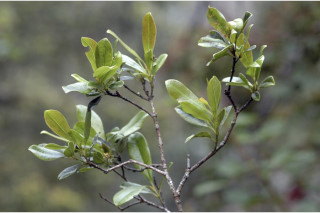
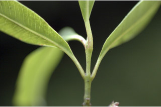

Images :



| Habit : | Trees up to 10 m tall. |
| Leaves : | Leaves simple , opposite , decussate ; petiole 0.6-1.2 cm long, canaliculate , glabrous ; lamina 5-12.5 x 2.5-6 cm, obovate to rounded or obcordate , apex obtuse or retuse , base cuneate - attenuate , margin entire , glabrous , thinly coriaceous , pellucid gland dotted; midrib canaliculate above; intramarginal nerves present; secondary nerve 8-12 pairs, distant; tertiary_nerves broadly reticulate . |
| Inflorescence / Flower : | Inflorescence cymes , axillary or from scars of fallen leaves ; flowers white. |
| Fruit and Seed : | Berry , globose , crowned with persistent calyx . |